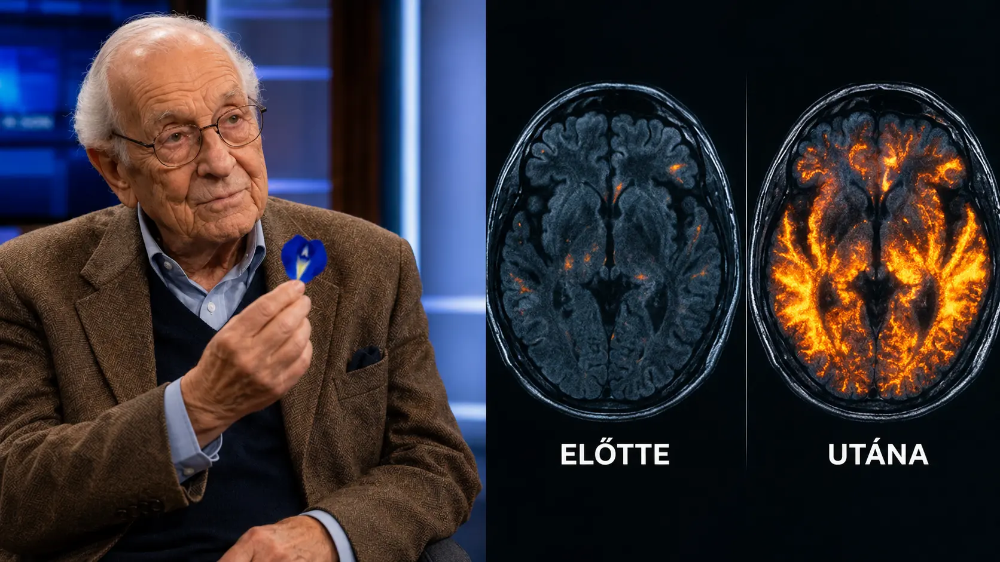

Neurochirurg: Bojíte se Alzheimerovy choroby? (Udělejte tohle před spaním)
Šokující objev se šíří po celé České republice. Světově uznávaný neurochirurg — který držel v rukou mozky tisíců lidí — odhalil to, co farmaceutický průmysl desítky let skrýval. A to, co uvidíte ve videu, navždy změní váš pohled na ztrátu paměti.
Zveřejněno: Dnes | Redakce Zdraví Dnes | Doba čtení: 2 minuty

Každé ráno se probudíte a první myšlenka je: co jsem dnes zapomněl? Jména, která vám nejdou na jazyk. Slova, která mizí uprostřed věty. Klíče, které jsou vždycky někde jinde. A ten tichý, dusivý strach — ne ze smrti, ale z toho dne, kdy už nepoznáte vlastní děti.
Roky vám říkají, že to je přirozená součást stárnutí. Že to musíte přijmout. Že se s tím nedá nic dělat. Ale co když se všichni mýlili — včetně vašeho lékaře?
⚠ Co vám lékař nikdy neřekl: Světově uznávaný neurochirurg — který desítky let studoval lidský mozek a operoval mozky tisíců lidí — objevil něco, co otřáslo lékařskou komunitou. Skutečná příčina kognitivního úpadku a Alzheimerovy choroby je úplně jiná, než jste si mysleli. Není to stárnutí. Není to genetika. Je to jednoduchý deficit — který můžete doplnit každý večer před spaním.
Objev, který se snažili smazat
Když tento neurochirurg sdílel svůj objev s veřejností, reakce byla okamžitá. Jeho videa byla odstraňována. Účty mazány. Kontaktovali ho právníci. Velké farmaceutické společnosti udělaly všechno pro to, aby se tato informace nerozšířila.
Proč taková panika? Protože kdyby lidé znali pravdu, nikdo by nekupoval ty drahé léky, které léčí jen příznaky — nikdy ne příčinu. Přírodní řešení, které nelze patentovat, by farmaceutickému průmyslu vzalo miliardy.
„Třicet let jsem držel v rukou lidské mozky. Viděl jsem, co je ničí — a co je zachraňuje. Pravdu už nelze vzít zpět.“
▶ PODÍVEJTE SE NA VIDEO TEĎ
Bezplatný přístup · Dostupné po omezenou dobu
Co přesně video obsahuje?
Než ho definitivně umlčeli, neurochirurg natočil podrobné video. V něm vysvětluje skutečnou příčinu kognitivního úpadku — která je šokující jiná, než jste si mysleli — a ten jednoduchý večerní rituál, který musíte dělat každý den, aby si mozek zachoval plnou kapacitu. Přírodní složku, kterou se používá po staletí na místě, kde je Alzheimerova choroba téměř neznámým pojmem.
Co ve videu najdete? Úplné vysvětlení skutečné příčiny kognitivního úpadku. Přírodní řešení, které se farmaceutické firmy snažily pohřbít. A ten jednoduchý rituál před spaním, který můžete udělat už dnes večer — doma, bez receptu, bez lékařského zásahu.
⚠ Varování: Video obsahuje informace, které farmaceutický průmysl nechce, abyste viděli. Už několikrát se ho snažili odstranit. Pokud jste tady teď — podívejte se okamžitě. Neoďládejte to na zítra.
▶ PODÍVEJTE SE NA VIDEO TEĎ
Bezplatný přístup · Dostupné po omezenou dobu